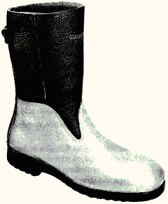
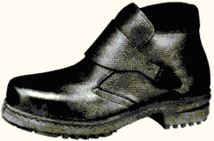
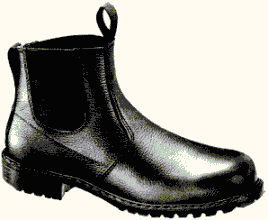
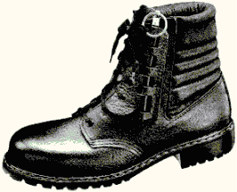

Das Schuhoberteil darf aus Leder oder anderen Materialien bestehen.
Gutes Schuhleder hat die Eigenschaft, sich in kurzer Zeit der individuellen Fußform anzupassen. Es kann sich in Grenzen dehnen, aber nicht zu sehr ausweiten, und nach der bleibenden Dehnung passt es sich elastisch der Änderung des Fußvolumens im Laufe des Tages an. Die Volumenänderung beträgt bei normaler Belastung 4 bis 5 %, kann aber in Einzelfällen bis zu 8 % betragen.
Anforderungen an das Schuhoberteil sind Dicke, Reißkraft, Festigkeit, Biegeverhalten, Wasserdampfdurchlässigkeit, Wasserdampfzahl, pH-Wert, Hydrolyse und - neu in den Normen DIN EN ISO 20345 bis DIN EN ISO 20347 aufgenommen - Chrom VI-Gehalt. Im Vergleich mit den zurückgezogenen Normen der Reihe DIN EN 345 bis Normen der Reihe DIN EN 347 definieren die aktuellen relevanten Normen des Fußschutzes eine neue Mindesthöhe für die Schuhformen B, C, D und E, bis zu der alle verwandten Materialien die Anforderungen an das Schuhoberteil vollständig erfüllen müssen. Darüber hinaus muss das Obermaterial ebenfalls die Anforderungen erfüllen, ausgenommen sind jedoch Einsätze und Polsterkragen. Hier gelten die für das Futter geringeren Anforderungen an Reißkraft und Abriebwiderstand.
Wasserdampfdurchlässigkeit und Wasserdampfaufnahme ergeben die Wasserdampfzahl als Maßstab für den bekleidungsphysiologischen Wert des Schuhes. Die Wasserdampfzahl kann sich aus hoher Wasserdampfdurchlässigkeit und geringer Wasserdampfaufnahme oder umgekehrt aus geringer Wasserdampfdurchlässigkeit und hoher Wasserdampfaufnahme ergeben, wobei ein Mindestwert für die Wasserdampfdurchlässigkeit nicht unterschritten werden darf.
Renommierte Schuhhersteller verkleben das Futterleder mit dem Oberleder so wenig wie möglich, damit der Kleber keine Sperrschicht bildet. Weitgehende Reduzierung der Klebestellen und der Anwendung der Punktverklebung lassen gute Ledereigenschaften voll zur Geltung kommen. Die Prüfung erfolgt am fertigen Schuh durch Herausschneiden der erforderlichen Prüfstücke.
Chrom VI darf mit der in den harmonisierten Normen beschriebenen Prüfmethode nicht nachweisbar sein. Als Nachweisgrenze ist 10 mg/kg angegeben.
Die Hinterkappe gibt dem Fuß im Fersenbereich einen festen seitlichen Halt. Auch unter Feuchtigkeitseinfluss (Fußschweiß) darf sie ihre Festigkeit nicht verlieren. Die Funktion der Hinterkappe darf auch durch eine äußere Verstärkung erreicht werden.
Zur Vermeidung eines vorzeitigen Verschleißes des Oberleders an der Zehenkappe z.B. bei häufig kniender Tätigkeit ist die Abdeckung mit einer Überkappe aus Sohlenmaterial oder ähnlich verschleißfestem, nicht kreidendem Material empfehlenswert.
Der Polsterkragen mit integriertem Knöchelschutz hat sich gut bewährt. Für diesen Bereich entfällt das manchmal schmerzhafte Eingewöhnen an neue Schuhe. Auch die Abpolsterung der Faltenlasche, zweckmäßig über die oberste Schnürung hinausgehend, verbessert die Trageeigenschaften.
Es wird unterschieden zwischen Blatt- und Quartierfutter. Blattfutter wird bei allen Schuhausführungen gefordert. Quartierfutter muss nicht, darf aber vorhanden sein. Falls es vorhanden ist, muss es den Anforderungen der Norm genügen.
Zu Blatt- und Quartierfutter siehe Bild 1.
Die Anforderungen an das Futter richten sich an Reißkraft, Abriebwiderstand, Wasserdampfdurchlässigkeit, Wasserdampfzahl, pH-Wert und - neu in den Normen DIN EN ISO 20345 bis DIN EN ISO 20347 aufgenommen - den Chrom VI-Gehalt.
Durchgescheuerte Fersenfutter sind häufige Reklamationsgründe. Der Hersteller gibt Auskunft über die Anzahl der Scheuerzyklen. Chrom VI darf mit der in den harmonisierten Normen beschriebenen Prüfmethode nicht nachweisbar sein. Als Nachweisgrenze ist 10 mg/kg angegeben.
Ist eine Lasche vorhanden, müssen die Reißkraft, der pH-Wert und - neu in den Normen DIN EN ISO 20345 bis DIN EN ISO 20347 aufgenommen - der Chrom VI-Gehalt den Anforderungen genügen.
Chrom VI darf mit der in den harmonisierten Normen beschriebenen Prüfmethode nicht nachweisbar sein. Als Nachweisgrenze ist 10 mg/kg angegeben.
Die Laufsohle muss ausreichend fest mit dem Schaft verbunden (Trennkraft) sein.
Es werden keine Anforderungen an die Profilgestaltung gestellt. Es dürfen auch glatte Sohlen ohne Profil verwendet werden. Dies ist bei direkt angespritzten, vulkanisierten oder geklebten Laufsohlen oder bei mehrschichtigen Laufsohlen der Fall, wenn die Höhe des Profils geringer als 2,5 mm ist.
Die Laufsohle von Sicherheits- und Schutzschuhen muss kraftstoffbeständig sein. Bei Berufsschuhen ist die Kraftstoffbeständigkeit der Laufsohle eine Zusatzanforderung.
Die Laufsohle muss eine durchgehende Mindestdicke und Festigkeit (Reißkraft, Abrieb, Biegeverhalten, Hydrolyse, Trennkraft zwischen den Schichten bei Mehrschichtensohlen) haben.
Die Brandsohle ist die Aufstandsfläche des Fußes und musste gemäß den zurückgezogenen Normen der Reihe DIN EN 345 bis Normen der Reihe DIN EN 347 in allen Schuhausführungen außer bei der Klassifizierungsart II (ganz geformte oder vulkanisierte Schuhe) vorhanden sein. Nach den neuen Normen DIN EN ISO 20345 bis DIN EN ISO 20347 kann Fußschutz der Klassifizierungsart I auch ohne Brandsohle hergestellt werden. Voraussetzung ist, dass eine nicht herausnehmbare Einlegesohle vorhanden ist, die die entsprechenden Anforderungen erfüllt. Darüber hinaus ist eine Reihe von Kombinationen von Brandsohle und Einlegesohle bzw. Fersendecksohle möglich (siehe Tabelle 8), wobei diese Kombinationen einen optimalen Tragekomfort (Anforderungen an Mindestdicke, Abriebwiderstand, pH-Wert, Chrom VI - Gehalt sowie Wasseraufnahme und Wasserabgabe) gewährleisten sollen. Das Material für die Brand- bzw. der Einlegesohle ist nicht vorgeschrieben.
Nur die vom jeweiligen Schuhhersteller zugelassen Einlegesohlen dürfen benutzt werden. Werden andere Einlegesohlen verwendet, wird einerseits das Baumuster verändert, d.h. ein neuer Schuh vorschriftswidrig in Verkehr gebracht, und werden andererseits möglicherweise der elektrischen Durchgangswiderstand des gesamten Schuhs und die Mindestresthöhe unter der Zehenkappe (siehe Abschnitt 1.6 dieses Anhanges) beeinträchtigt.
An die Zehenkappe der Sicherheits- oder Schutzschuhe werden unterschiedliche Anforderungen gestellt, und zwar an die dynamische und die statische Belastbarkeit (Stoß und Druck).
Es wird zwischen zwei Zehenkappenausführungen unterschieden (Prüfenergien 200 J und 100 J, bzw. Druckkräfte von 15 KN und 10 KN).
200 J entspricht in etwa der Energie, die beim Auftreffen einer 20 kg schweren Masse aus einer Höhe von 1 m entsteht, eine Druckkraft von 15 KN resultiert aus einer Masse von 1500 kg.
Nach der Prüfung dürfen die in Abhängigkeit von der Schuhgröße festgesetzten Mindestresthöhen nicht unterschritten werden. Soweit Zehenkappen in Berufsschuhe eingebaut werden, sind keine Anforderungen an die Zehenkappe gestellt. Solche Schuhe dürfen darum nicht als Sicherheits- oder Schutzschuh verwendet werden.
Die Prüfung der Zehenkappen gemäß den harmonisierten Normen erfolgt senkrecht von oben. Gegenüber einer seitlichen Belastung, z.B. bei einem seitlichen Überrollen, ist kein Schutz gegeben bzw. bietet die Zehenkappe aufgrund ihrer Konstruktion nur einen begrenzten Schutz.
Die harmonisierten Normen schreiben kein Material vor, aus dem die Zehenkappe herzustellen ist. Die Zehenkappe besteht üblicherweise entweder aus metallischen Werkstoffen, z.B. Stahl oder Aluminium, oder aus nichtmetallischen Werkstoffen, z.B. Verbundwerkstoffen oder Kunststoff. Sie darf sich nicht ohne Zerstörung des Schuhes entfernen lassen.
Auf Grund der Materialeigenschaften weisen die Zehenkappen aus Metall - im Vergleich mit den nichtmetallischen Zehenkappen - ein höheres Gewicht und eine höhere Festigkeit auf. Nach der dynamischen Belastung entsprechend den harmonisierten Normen verbleibt eine plastische Verformung, die, wenn die Anforderung erfüllt ist, eine Mindestresthöhe unter der Zehenkappe garantiert. Dagegen sind nichtmetallische Zehenkappen leichter und können sich elastischer verhalten, d.h. sie können sich gegebenenfalls nach einer Beaufschlagung zurück verformen. Der Benutzer muss aber trotz gegebenenfalls geringer Deformation den Zustand der Zehenkappe gemäß den Herstellerangaben beurteilen und entsprechend der Herstellerangaben handeln.
Nichtmetallische Zehenkappen müssen neben der statischen und dynamischen Belastbarkeit gemäß den harmonisierten Normen DIN EN ISO 20345 bis DIN EN ISO 20347 die Anforderung "chemische und thermische Alterung" erfüllen. Chemische Alterung bedeutet, dass die Zehenkappe jeweils vor der dynamischen Belastung 24 Stunden vollständig in Säure, Lauge und Kraftstoff getaucht wird. Bei der thermischen Alterung wird die dynamische Belastung der Zehenkappe bei +40 °C bzw. -1 °C durchgeführt.
Die Mindestzehenkappengröße ist der jeweiligen Schuhgröße zugeordnet. Die Länge der Zehenkappe wird durch die Abrollbewegung des Fußes begrenzt, die sich im Oberleder in der so genannten Gehfalte auswirkt. Je flexibler der Schuhunterbau ist, umso mehr nähert sich die Zehenkappenkante dem Fußrücken. Bei sorgfältiger Abdeckung der Zehenkappenkante wird eine großflächige Druckverteilung erreicht und eine örtliche Druckstelle vermieden. Die sorgfältige Ausbildung des Überganges von der Zehenkappe zum Schaft ist ein wesentlicher Maßstab für einen guten Sicherheits- bzw. Schutzschuh. Die häufigsten Beanstandungen beziehen sich auf diesen Bereich. Auf Wunsch verarbeiten Schuhhersteller auch überbreite Zehenkappen oder bieten Schuhe mit Überweiten an.
Aus dem Unfallgeschehen ist zu erkennen, dass in vielen Fällen die Zehenkappe (der kleine Zeh ist nicht abgedeckt) mehr als nur die von ihr abgedeckte Fläche des Fußes schützen kann, weil viele auftreffende Gegenstände flächig sind.
Nach der Achten Verordnung zum Geräte- und Produktsicherheitsgesetz (Verordnung über das Inverkehrbringen von persönlichen Schutzausrüstungen 8. GPSGV) wird generell rutschhemmender Fußschutz gefordert.
Die Analyse von Unfällen ergibt einen besonderen Schwerpunkt bei den Sturzunfällen. Eine große Anzahl dieser Unfälle entsteht durch Ausrutschen beim Gehen. Die Ursachen für das Ausrutschen sind vielfältig. Sie sind insbesondere in der Beschaffenheit und Verschmutzung des Fußbodens bzw. Geländes, in der Form des Fußschutzes und in der Gestaltung der Laufsohle zu suchen.
Hinweise für die Auswahl von Fußböden in Arbeitsräumen und Arbeitsbereichen mit Rutschgefahr sind der BG-Regel "Fußböden in Arbeitsräumen und Arbeitsbereichen mit Rutschgefahr" (BGR 181) zu entnehmen.
In den zurückgezogenen Normen der Reihe DIN EN 344 bis 347 wurden keine Anforderungen an die Rutschhemmung definiert. In Deutschland erfolgte die Bestimmung der Rutschhemmung mit dem Verfahren der "Schiefen Ebene". Im Prinzip geht eine Person auf einer sich neigenden Ebene mit dem zu prüfenden Fußschutz im Trippelgang vor- und rückwärts. Der Bodenbelag und das Gleitmittel sind vorgeschrieben. Gemessen wird der Winkel, bei dem die Person nicht mehr bereit oder in der Lage ist, den Trippelgang weiterzuführen. Als Mindestanforderung bei allen Schuhen ist die Bewertungsgruppe R1 (Akzeptanzwinkel von 4 bis 10 °) erforderlich. Bei einem Akzeptanzwinkel > 10° ist die Bewertungsgruppe R2 erreicht.
In den harmonisierten Normen DIN EN ISO 20345 bis DIN EN ISO 20347 werden ebenfalls keine Anforderungen an die Rutschhemmung definiert. Es ist beabsichtigt, diese auf der Basis des Prüfverfahrens nach DIN EN 13287 "Elektrisch isolierende Schuhe für Arbeiten an Niederspannungsanlagen" einzufügen. Bei dem Prüfverfahren nach DIN EN 13287 handelt es sich um ein maschinelles Prüfverfahren. Bestimmt werden die Reibungskoeffizienten auf den Untergründen "Keramikfliese" und "Stahlboden" mit den Gleitmitteln "Glycerin" und einer Detergenslösung aus "Wasser + NaLS" gemäß dem Abrollen des Fußes beim Gehen, d.h. für das Vorwärtsgleiten der Ferse (+7°), das ebene Vorwärtsgleiten (0°) sowie das Rückwärtsgleiten auf der Schuhspitze (-7°).
Die Laborergebnisse der Rutschhemmungsprüfungen von Fußböden und Fußschutz sind nur begrenzt für die Praxis nutzbar. Weil die Prüfmethoden bei der Fußboden- und der Fußschutzprüfung unterschiedlich sind, besteht kein Zusammenhang zwischen den Ergebnissen.
Neben den vorgenannten Grundanforderungen können auf Grund der Gefährdungsbeurteilung an den Fußschutz zusätzliche Anforderungen gestellt werden. Zusatzanforderungen, die den Normen DIN EN ISO 20345 bis DIN EN ISO 20347 entsprechen, sind gemäß den Normen zu kennzeichnen (siehe Tabellen 7 und 9). Welche zusätzliche Anforderung von einem Schuh erfüllt wird, muss aus der Kennzeichnung ersichtlich sein.
An das Schuhoberteil von Schuhen aus Leder oder anderen Materialien (Klassifizierungsart I) darf eine zusätzliche Anforderung an den Wasserdurchtritt und die Wasseraufnahme gestellt werden (Kennzeichnung "WRU"). Im Vergleich mit den zurückgezogenen Normen der Reihe DIN EN 345 bis Normen der Reihe DIN EN 347 wurde in den aktuellen Normen das Prüfverfahren modifiziert und die Grenzwerte entsprechend verändert.
Profilierte Laufsohlen unterliegen einer Zusatzanforderung. Eine Laufsohle gilt als profiliert, wenn einerseits bei direkt angespritzten, vulkanisierten, geklebten oder bei mehrschichtigen Laufsohlen die Profilhöhe nicht weniger als 2,5 mm oder andererseits bei Vollgummi- oder Gesamtpolymerschuhen die Profilhöhe nicht weniger als 4 mm beträgt. Die Zusatzanforderung beinhaltet in Abhängigkeit der Art der Laufsohle darüber hinaus Anforderungen an die profilierten Flächen und die Dicke der Laufsohlen.
Weitere Zusatzanforderungen sind:
Aufgabe des durchtrittsicheren Unterbaus ist es, das Eindringen von spitzen und scharfen Gegenständen in die Fußsohle zu verhindern.
Für die durchtrittsichere Einlage ist kein bestimmter Werkstoff vorgeschrieben. Maßgebend ist die beim Durchdrücken eines Prüfnagels erforderliche Kraft, die größer als 1100 N sein muss.
1100 N entsprechen ca. der Gewichtskraft einer Masse von 110 kg oder der auftretenden Kraft eines 80 bis 90 kg schweren Menschen beim Gehen. Trotzdem sind die Fälle selten, in denen die durchtrittsichere Einlage aus Stahl vom Nagel durchdrungen wird.
Im Allgemeinen hat sich Bandstahl von ca. 0,45 mm Dicke durchgesetzt.
Die Flexibilität der Laufsohle im Ballenbereich bleibt weitgehend erhalten, wenn die Stahlzwischensohle richtig eingebaut wird. Sie sollte im Ballenbereich längsverschiebbar sein. Bei fester Verbindung mit dem Schuhunterbau im hinteren Steg und im Absatzbereich wird das Wandern der Stahlsohle im Schuh verhindert. Damit wird der so genannte Sperrholzeffekt vermieden, der die Abrollbewegung stark behindert. Inzwischen gibt es Schuhkonstruktionen mit Stahlzwischensohlen, die so flexibel sind, dass das Vorhandensein der Stahlsohle nicht zu erkennen ist.
Um eine Verbindung innerhalb der Laufsohle und mit dem Schaft sicherzustellen, darf die Stahlzwischensohle nicht bis an den Sohlenrand reichen.
Mit der Festlegung der zur Schuhgröße zugeordneten Breite ist der Fußgrundriss praktisch abgedeckt. Allerdings kann ein seitlich oder im inneren Gelenkbereich eindringender Nagel den Fuß noch treffen. Diese Fälle sind selten.
Verschiedene Schuhhersteller bieten durchtrittsichere Einlagen aus nichtmetallischem Material an. Diese Einlagen können mit dem Schaft vernäht werden, so dass der gesamte Sohlenbereich abgedeckt wird. Gemäß den neuen harmonisierten Normen DIN EN ISO 20345 bis DIN EN ISO 20347 müssen die nichtmetallischen durchtrittsicheren Einlagen die Anforderung "chemische und thermische Alterung" erfüllen. Chemische Alterung bedeutet, dass die durchtrittsichere Einlage jeweils vor dem Durchdrücken des Prüfnagels in Säure, Lauge und Kraftstoff getaucht wird. Bei der thermischen Alterung wird das Durchdrücken des Prüfnagels bei +40 °C bzw. -1 °C durchgeführt.
Die Einlage darf ohne Zerstörung des Unterbaues nicht entfernt werden können, sie darf nicht über der Bördelung der Zehenkappe liegen und nicht mit ihr fest verbunden sein.
Herausnehmbare durchtrittsichere Einlagen sind unzulässig. (Die Durchtrittsicherheit wird mit "P" gekennzeichnet.)
Je nach Größe des elektrischen Durchgangswiderstandes wird zwischen "leitfähigen", "antistatischen" und "elektrisch isolierenden" Schuhen unterschieden.
Leitfähige Schuhe werden erforderlich, wenn ein elektrostatisches Aufladen durch ein Ableiten der elektrostatischen Ladung in kürzester Zeit zu verhindern und eine Berührung mit unter Spannung stehenden Teilen ausgeschlossen ist.
Diese Schuhe werden z.B. bei der Montage von empfindlichen elektronischen Bauteilen eingesetzt.
Die obere Grenze des Widerstandes beträgt dabei 105Ω (Kennzeichnung "C") nach Konditionierung in einer trockenen Atmosphäre (30 % Feuchtigkeit).
Antistatische Schuhe müssen benutzt werden, wenn die Notwendigkeit besteht, elektrostatische Aufladung zu vermindern, und gleichzeitig die Berührung von unter Spannung stehenden Geräten nicht ausgeschlossen ist. Nach Konditionierung in trockener (30% Feuchtigkeit) sowie in feuchter Atmosphäre (85% Feuchtigkeit) muss der elektrische Widerstand zwischen 105Ω und 109Ω liegen (Kennzeichnung "A").
Gemäß der BG-Regel "Vermeidung von Zündgefahren infolge elektrostatischer Aufladungen" (BGR 132) stellt ein ableitendes Schuhwerk sicher, dass eine auf ableitendem Boden stehende Person einen Ableitwiderstand gegen Erde von höchstens 108 aufweist. Der Fußschutz erfüllt nicht automatisch die Anforderungen gemäß BGR 132, weil sich die Messmethoden zur Bestimmung des elektrischen Durchgangswiderstandes unterscheiden. Vor dem Beginn der Arbeiten in explosionsgefährdeten Bereichen ist z.B. durch Messungen festzustellen, ob der Fußschutz für diese Arbeiten geeignet ist.
Elektrisch isolierende Schuhe (Kennzeichnung I) sollen ein Durchströmen des Körpers verhindern und müssen der elektrischen Klasse O bzw. der elektrischen Klasse OO entsprechen (siehe Abschnitt 4.2.5 des Anhanges 2).
Damit es beim Betreten von heißen Flächen, z.B. beim Einbau von heißem bituminösem Mischgut oder in Schmelz-, Gieß-, Flämm- und Brennbetrieben nicht zu Verbrennungen der Fußsohlen kommt, müssen Schuhe mit wärmeisolierendem Schuhunterbau benutzt werden, deren Sohlenaufbau die erforderliche thermische Eigenschaft besitzt.
In den Schuhen hat die metallische Zehenkappe keinen negativen Einfluss auf die Erwärmung im Schuhinneren bei hohen Außentemperaturen.
Besteht die Gefahr des Hineintretens in spitze oder scharfe Gegenstände, muss der Unterbau von Hitzeschuhen durchtrittsicher ausgebildet werden. Bei der Verwendung einer durchtrittsicheren Einlage aus Stahl hat diese keinen negativen Einfluss auf die Wärmeisolation des Schuhunterbaues.
Der wärmeisolierende Unterbau kann immer nur eine begrenzte Schutzfunktion erfüllen. Die Prüfung wird mit einer Kontakttemperatur von 150 °C durchgeführt. Gemessen wird der Temperaturanstieg im Schuh nach 30 Minuten. Zusätzlichen Wärmeschutz bieten z.B. dicke Wollsocken.

Bild 8: Beispiel für Schaftstiefel aus metallisiertem Leder
Eine Höchsttemperatur im Innern des Schuhes von 42 °C gilt medizinisch noch als unbedenklich.
Schuhe, die den Anforderungen an die Wärmeisolierung genügen, sind mit "HI" gekennzeichnet.
Bei Beanspruchung durch Wärmestrahlung haben sich Schaftstiefel und hohe Schnürstiefel bewährt, die aus wärmereflektierendem metallisiertem Leder gefertigt sind (siehe Bild 8).
Beim Umgang mit feuerflüssigem Material, heißen Funken und Spritzern bieten Stiefel aus metallisiertem Leder der Formen D und C bestmöglichen Schutz gegen Verbrennungen des Fuß und Unterschenkelbereichs; sie sind Schuhen mit Gamaschen vorzuziehen. In diesen Fällen haben sich Schuhe mit einteiligem Schaft und Hinterkappennaht bewährt. Die Hosenbeine sind immer über den Stiefelschäften zu tragen.
Zum Schutz gegen Kälte sind Schuhe mit kälteisolierendem Unterbau ausgerüstet (Kennzeichnung "CI"). Gemäß den zurückgezogenen Normen der Reihe DIN EN 345 bis Normen der Reihe DIN EN 347 erfolgte die Prüfung bei einer Außentemperatur von -20 °C und einer Temperatur im Schuhinnern von + 20 °C. In den Normen DIN EN ISO 20345 bis DIN EN ISO 20347 beträgt die Außentemperatur -17 °C und die Temperatur im Schuhinnern + 23 °C. Die Anforderung kälteisolierender Unterbau gilt als erfüllt, wenn der Temperaturabfall nach 30 Minuten im Schuhinnern auf der Oberfläche der Brandsohle nicht mehr als 10 °C beträgt.
In diesen Schuhen haben weder die metallische Zehenkappe noch eine eingebaute durchtrittsichere Einlage aus Stahl einen negativen Einfluss auf die Abkühlung im Schuhinneren bei tiefen Außentemperaturen. Schuhe mit einer PUR-Laufsohle haben gute Isolationseigenschaften, während bei Gummi und PVC-Sohlen zusätzliche Maßnahmen zur Verbesserung der Isolation notwendig sind. Bei Schuhen für die kalte Jahreszeit kommt dem Isolationsvermögen des Schuhunterbaues mehr Bedeutung zu als der Schaftisolation. Deshalb kann bei Winterschuhen auf eine Schaftisolierung verzichtet werden, um die Behaglichkeit des Benutzers (thermischer Komfort) möglichst wenig einzuengen. Dieser ist von der Umgebungstemperatur und der jeweiligen körperlichen Leistung abhängig. Die Isolation im Schaftbereich lässt sich durch eine geeignete Fuß- und Beinkleidung den jeweiligen Verhältnissen anpassen.
Das physikalische Maß für die Schutzwirkung ist das Energieaufnahmevermögen des Fersenbereichs der Schuhe. Es muss mindestens 20 J betragen (Kennzeichnung "E").
20 J entspricht in etwa der Energie, die beim Auftreffen einer 2 kg schweren Masse aus einer Höhe von 1 m entsteht.
Die Prüfung erfolgt mittels eines definierten Prüfstempels, der mit einer vorgegebenen Geschwindigkeit bis zu einer Kraft von 5000 N im Bereich des Absatzes von innen gegen den Schuhunterbau gepresst wird. Hieraus lässt sich das Energieaufnahmevermögen bestimmen.
Eine Kraft von 5000 N resultiert aus einer Masse von 500 kg.
Innerhalb der gewerblichen Wirtschaft bilden die Fersenbeinbrüche bei den neuen Unfallrenten einen wesentlichen Unfallschwerpunkt. Die Behandlungs- und Folgekosten der Fersenbeinbrüche belasten die gewerblichen Berufsgenossenschaften mit deutlich mehr als 270 Millionen Euro jährlich.
60 % der neuen Unfallrenten resultieren durch Absturz und ca. 30 % der Fälle werden durch Stolpern, Rutschen und Stürzen hervorgerufen. Unfallursächlich ist vor allem das Arbeiten auf Leitern und Tritten. Die am häufigsten betroffenen Wirtschaftszweige sind der Baubereich, die Bereiche Metall, Handel und Verwaltung sowie Verkehr.
Der Mittelfußschutz schützt nicht nur den Mittelfuß vor einer dynamischen Belastung (Stoß), sondern übernimmt auch den Schutz der nicht von der Zehenkappe abgedeckten Grundglieder der 4. und 5. Zehe. Er kann sowohl im Schuh integriert oder außen am Schuh befestigt sein und darf nicht ohne den Schuh zu beschädigen entfernt werden können. Die Kennzeichnung eines Schuhs mit Mittelfußschutz ist "M".
Der Sicherheitsschuh mit Mittelfußschutz wird z.B. in Bereichen des Bergbaus und der Stahlindustrie getragen, ist aber auch zweckmäßig für Bereiche, in denen beispielsweise mit Bohr- und Aufbruchwerkzeugen gearbeitet wird.
Der Mittelfußschutz verteilt die bei einer Stoßeinwirkung auftretenden Kräfte über Sohle, Zehenkappe und einen möglichst großen Bereich des Fußes. Die Prüfung des Mittelfußschutzes erfolgt mit einer Energie von 100 J. Gemessen wird die Resthöhe, die je nach Schuhgröße eine Mindesthöhe nicht unterschreiten darf.
100 J entspricht in etwa der Energie, die beim Auftreffen einer 10 kg schweren Masse aus einer Höhe von 1 m entsteht.
Triangelösen für den Schuhverschluss haben sich wegen ihrer Zweckmäßigkeit weitgehend durchgesetzt. Sie liegen flach auf, gleichen die Schnürsenkelspannung aus und schonen die Schnürsenkel. Damit sind Haken entbehrlich geworden, die abbrechen, ausreißen und mit ihrer Vernietung auf den Fußrücken drücken können. Ein mögliches Hängenbleiben wird vermieden. In das Leder eingesetzte Ösen, besonders solche mit einem kleinen Durchmesser, lassen sich schlecht schnüren und beanspruchen die Schnürsenkel sehr.
Hochwertige Schnürsenkel haben normalerweise die gleiche Lebensdauer wie der Schuh selbst und tragen durchaus dazu bei, dass der Schuh getragen wird. Hitzebeständige Schnürsenkel sind bei Arbeiten mit heißen Massen und Brandbekämpfung erforderlich.
Zum schnellen An- und Ausziehen haben Stiefel z.B. eine Überschlaglasche mit ein oder zwei Patentschnallen, die sich mit einem Handgriff lösen lassen. Es finden auch Einhängeknopfverschlüsse, Schnallenschnell , Klettverschlüsse oder Reißverschlüsse Verwendung.
Ein anderer Schnellverschluss besteht aus einer scharnierartig angebrachten Lederlasche. Er wird durch das Ziehen eines biegsamen Drahtseilstabes am oben angebrachten Ring geöffnet. Bei geschlossener Verbindung wird der Stiefel normal geschnürt (siehe Bild 9).
Beim Rangieren im Gleisbetrieb kann der Zugstiefel eingesetzt werden. Er ermöglicht das schnelle Ausschlüpfen durch einen elastischen Schaftabschluss. Ein am oberen Schaftrand angebrachter Gummiriemen verbessert den Halt des Fußes im Schuh.

Stiefel mit Überschlaglasche

Zugstiefel mit elastischem Schaftabschluss

scharnierartig angebrachte Lederlasche mit biegsamem Drahtseilstab
Bild 9: Schuhe mit unterschiedlichen Schnellverschlüssen